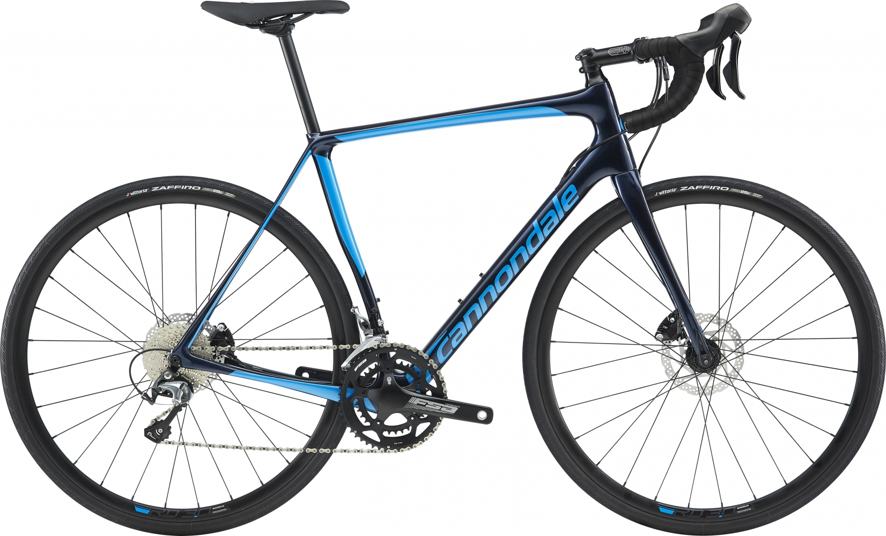

Synapse Carbon – истинно гоночный велосипед с рамой правильной геометрии, созданной по технологии гашения вибраций SAVE PLUS. Этот спортивный велосипед отлично приспособлен для долговременных катаний.
Быстрый и комфортный — эти характеристики делают велосипед Synapse бестселлером среди всех произведений Cannondale. Первый велосипед Cannondale Synapse появился в 2007 году, а сейчас нам представлена усовершенствованная модель. Велосипед Cannondale Synapse подойдет для тех, кто готов пожертвовать суперскоростными качествами ради мягкой стабильной езды. В данном велосипеде использована легчайшая рама из углеводородного волокна, которая обладает невероятной прочностью и долговечностью. Она весит всего 950 грамм! Также основательно подошли и к проблеме сглаживания неровностей и препятствий на дорогах, для этого было усовершенствовано само углеводородное волокно и его способность «поглощать» неровности и резкие скачки.
Обновление технологии SAVE Micro-Suspension заключается в переработке профиля задних перьев, благодаря чего увеличивается гибкость и вертикальная податливость велосипеда.
Для того, чтобы райдер любого роста получил те же ощущения от езды и управления байком, в новом Synapse используются три разных диаметра штока и разные значения офсета передней оси для каждого отдельного взятого размера рамы.
Рама Synapse Disc Asymmetric, карбон BallisTec, Di2 ready, технология SAVE, BB30a, ось 12мм
Вилка Synapse Disc Asymmetric, карбон BallisTec, технология SAVE, ось 12x100мм / конусная рулевая для ростовок - 44-48см - 1 1/8"; для ростовок 51-54см - 1-1/8" - 1-1/4"; для ростовок 56-61см - 1-1/8" - 1-3/8"
Шатуны FSA Omega Alloy, 50/34
Ручки переключения(манетки) Shimano Tiagra, 2x10
Руль Cannondale C4, алюминий 6061, Compact
Вынос Cannondale C4, алюминий 6061, 31.8, 7-град
Рулевая колонка Synapse Si, 25mm Alloy top cap
Грипсы Cannondale Grip Bar Tape w/Gel, 3.5mm
Подседельная труба Cannondale C4, алюминий 6061, 25.4 x 350мм (44-56), 400мм (58-61)
Седло Cannondale Stage Ergo
Спицы Сталь 14g
Обода RD 3.0, 24h отверстия под спицы на переднем колесе, 28h отверстий под спицы на заднем колесе
Втулки Formula RX-512 12x100 - передняя; RX-142 12x142 - задняя
Покрышки Vittoria Zaffiro, 700 x 28c
Передний переключатель Shimano Tiagra, braze-on
Задний переключатель Shimano Tiagra GS
Кассета Shimano Tiagra, 11-34, 10-ск.
Цепь KMC X10EL, 10-ск
Передний тормоз Гидравлический дисковый Shimano Tiagra, ротор RT56 160мм
Задний тормоз Гидравлический дисковый Shimano Tiagra, ротор RT56 160мм
Ручки тормоза Shimano Tiagra hydro disc